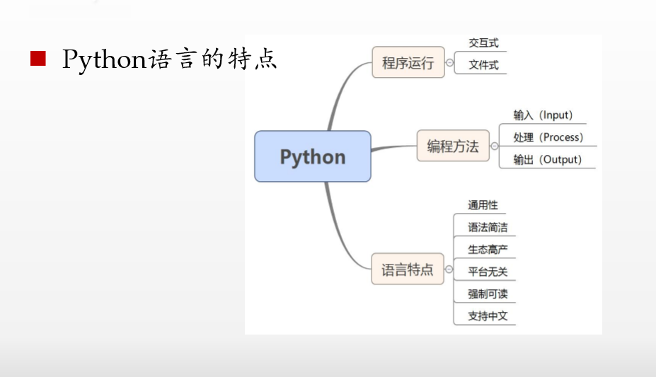
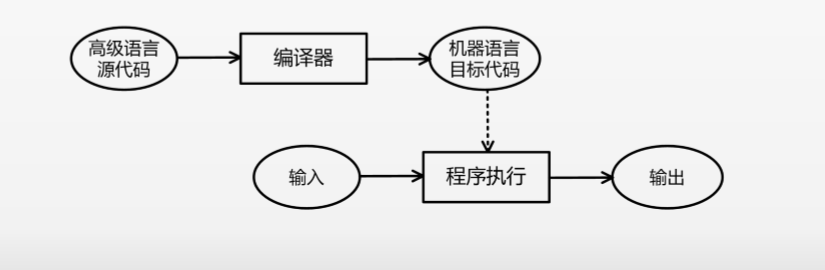
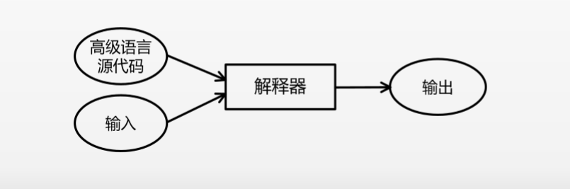
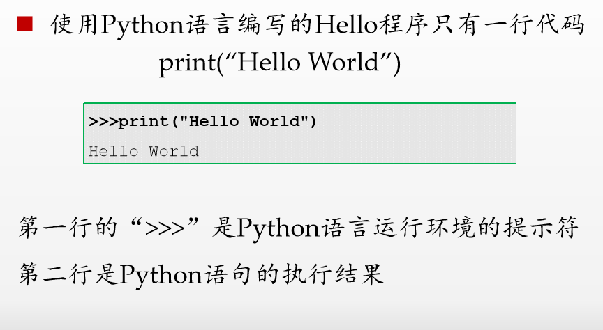
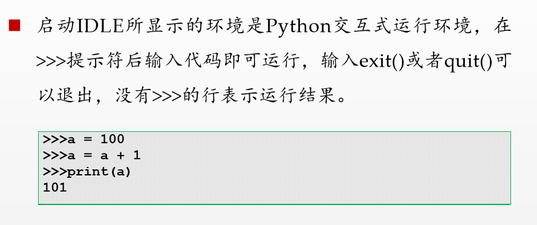
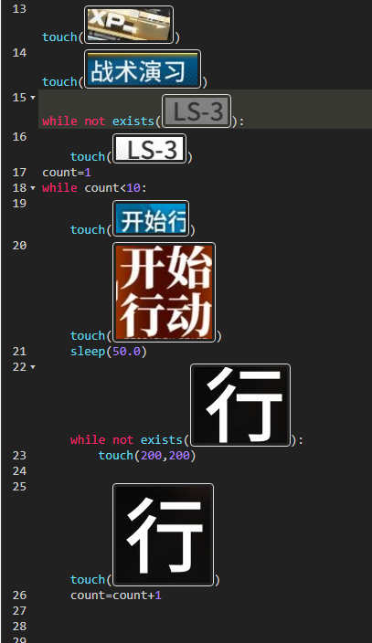
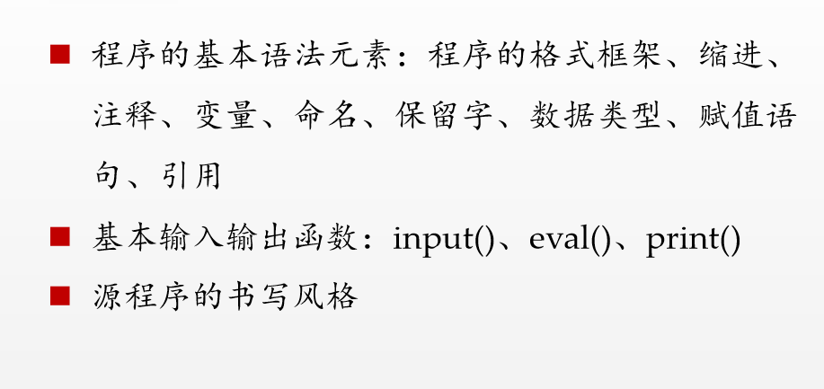
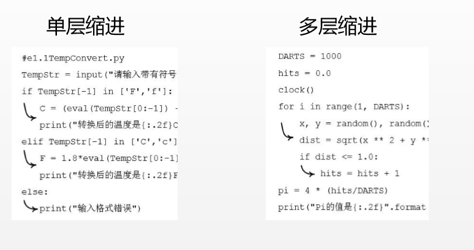
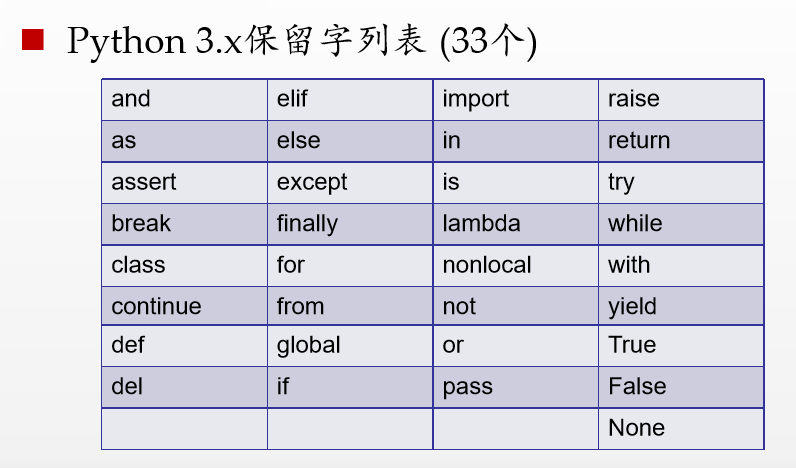
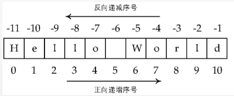

概述
计算机二级在近两年新加了python的选择，趁机考了一下，顺便记录一下学习的一些所获
程序设计语言概述
考纲考点：

这一部分主要是介绍计算机语言的公共常识，一些尝试我就按照自己的理解方式来记忆：
程序设计语言——计算机与人类之间的翻译官，所以称为交互体系，翻译官用的语言称为计算机程序，就像人类的语言有语法等等规则一样。
高级编程语言包括静态语言和脚本语言，python是解释语言，就是直接跟计算机对话的那种，也就是脚本语言；Java那种是需要编译才能执行的语言，就相当于需要二次翻译，是静态语言，因为静态（懒），还需要一个传话的才行。
官方用语的话，编译是将源代码转换成目标代码的过程，解释是将源代码逐条转换成目标代码的同时逐条运行目标代码的过程。二者区别可见下图来理解：


编译是一次性翻译，再传话，经过传话人以后，就不需要翻译官再翻译一遍了，所以一旦程序被编译，就不需要再次编译，所以重复执行速度更快，当然这个目标代码也就不再需要编译器。
解释是每次都需要解释，因为翻译一遍的外语容易忘，告诉传话人以后，传话人就不容易忘自己母语记忆的内容，但是解释是翻译官兼职传话人，所以只要翻译官存在，程序就可以执行。无论是那种系统，而且一个人干，程序纠错和维护也非常方便。
Python语言概述

这是python的最小程序了。
至于python的开发环境配置这里就不介绍了，环境变量可以直接添加，比jdk方便多了
python的解释器有两个重要工具：IDLE——python集成开发环境（相当于人类、翻译官、计算机组成的整体），pip——python第三方库安装工具（邀请翻译官的功能）
Python程序的运行方式——交互式（命令行）、文件式（非命令行）

程序的基本编写方法
IPO程序编写方法——Input（输入，相当于人类编写代码这个过程），process（处理，相当于翻译），output（计算机得到翻译官给的信息做出响应）
Python程序的特点
Python具有通用性，因为应用领域广，所以才要学习，当作工具用也好
Python语法简洁，只有33个保留字，看起来就像英语正常表达一样
Python生态高产，库特别多，也就是翻译官特别充足，很多荒诞无理的要求都可以被翻译官听懂
除了Python语法的三个重要特点外，Python程序还 有一些具体特点。
•平台无关：前面说到过，只要有翻译官就可以，在任何系统都可以运行
•强制可读 ：也就是利用缩进来表明逻辑关系，相当于句子之间没有停顿，使用缩进来强制理解
•支持中文：看下图

Python语言基本语法元素
考纲考点：

程序的格式框架
缩进：
Python语言采用严格的“缩进”来表明程序的 格式框架，用来表示代码之间的包含和层次关系。 1个缩进 = 4个空格 =1个退格。但是空格和退格不能混用。而且缩进是Python语言中表明程序框架的唯一手段。其重要性可见一斑。

注释：
注释就是在输入的时候加入一些不想让翻译官翻译的东西，但是翻译官如何去区分哪些是要的，哪些是不要的呢？所以就有了注释，单行注释用井号。多行注释用三对引号，三队引号之间的内容就是被注释掉了。单引号双引号无所谓。
1 | ''' |
变量：
变量就是一个一个的小房子，用来存放东西的，经常用一个等号把东西放进变量（房子）里，也就是赋值。
1 | a=3 #把3放进了a中 |
命名：
Python语言允许采用大写字母、小写字母、数 字、下划线(_)和汉字等字符及其组合给变量命 名，但名字的首字符不能是数字，中间不能出现空格，长度没有限制 n。注意：标识符对大小写敏感，python和Python 是两个不同的名字
保留字：
python中你盖的房子是变量，早就存在的名胜建筑就是叫做保留字了，自己的房子爱咋咋地，名胜古迹可不能乱动，而且还不能建一个和名胜建筑一样的房子，要不然就侵权了，要坐牢（出bug）的！

数据类型
Python语言支持多种数据类型，最简单的包括数字类型、字符串类型，略微复杂的包括元组类型、集合类型、列表类型、字典类型等。
数字类型
表示数字或数值的数据类型称为数字类型，Python语言提供3种数字类型：整数、浮点数和复数，分别对应数学中的整数、实数和复数。
一个整数值又可以表示为十进制、十六进制、八进制和二进制等不同进制形式。一个浮点数可以表示为带有小数点的一般形式，也可以采用科学计数法表示。
1 | 举个例子，看不懂也没关系 |
字符串
至于字符串， Python语言中，字符串是用两个双引号“ ”或者单 引号‘ ’括起来的一个或多个字符。

1 | "hello world"[1] |
可以采用[N: M]（左闭右开区间）格式获取字符串的子串，这个操作被形象地称为切片。
1 | "hello world"[1：4] |
可以通过Python默认提供的len()函数获取字符串 的长度，一个中文字符和西文字符的长度都记为1。
1 | len("hello") |
程序的语句元素
表达式
产生或计算新数据值的代码片段称为表达式，简单说就是连接在一起的一个句子/短句
赋值
前面提到过了，一个等号是赋值，而且是从右往左赋值，如a=3
引用
Python程序会经常使用当前程序之外已有的功能 代码，这个过程叫“引用”。Python语言使用 import保留字引用当前程序以外的功能库，使用方 式如下： import <功能库名称>
其实说白了就是请翻译官
分支语句
分支语句是控制程序运行的一种语句，它的作用是根据判断 条件选择程序执行路径。分支语句包括：单分支、二分支和 多分支。如：
1 | a=3 #一开始告诉你a里面放的是3 |
循环语句
循环语句是控制程序运行的一类重要语句，与分支 语句控制程序执行类似，它的作用是根据判断条件 确定一段程序是否再次执行一次或者多次。
1 |
|
基本输入输出函数
直接演示了
1 | a=input("默认会输入字符串噢") #输入函数input()，就算是输入数字也会当成字符串 |
print函数还有个重要的地方：print函数输出讲道理是直接就换行了，因为print()里面自带换行，举个例子：
1 | print(3,end="") #不换行 |